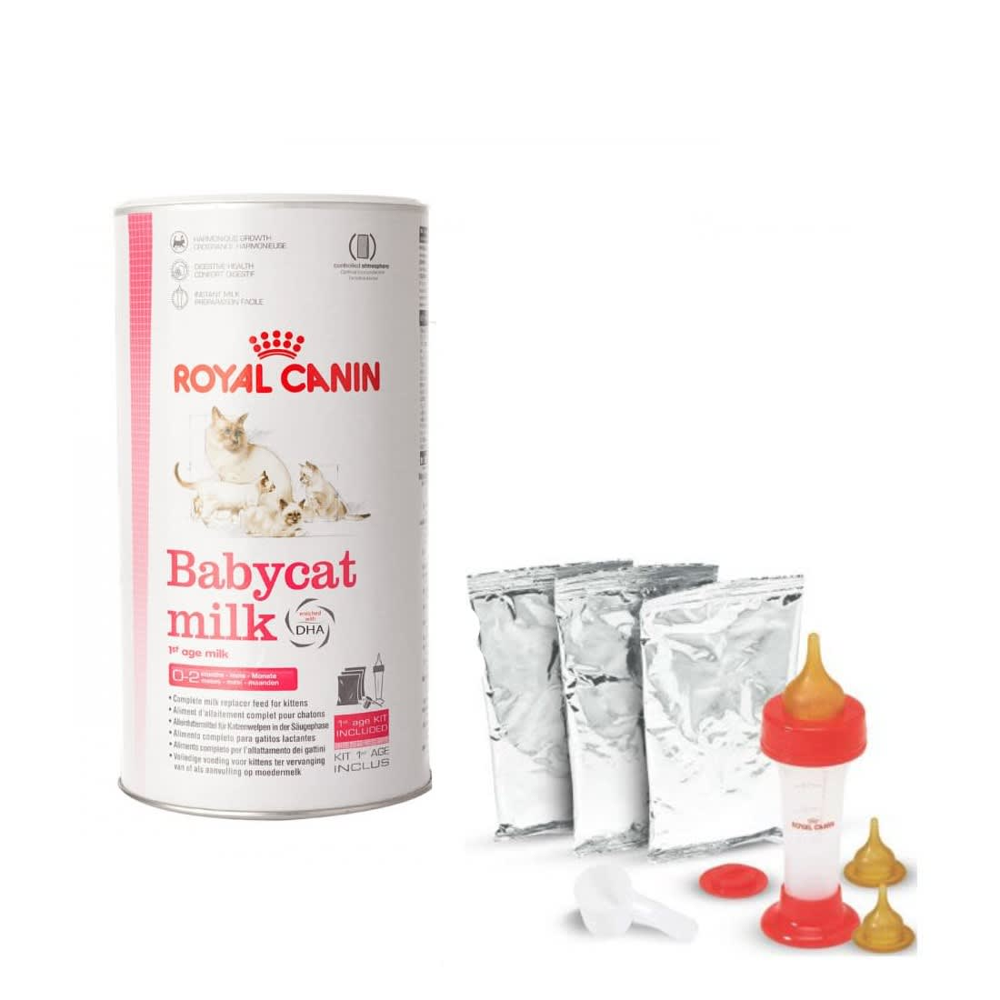

Грижа за осиротели котета
Вариант е се да намери сурогатна майка, която да приеме и отгледа котетата. При липса на такава, се преминава към ръчно хранене и отглеждане на котетата. В такъв случай стопанина следи храненето, уринирането, дефекацията и температурата на новороденото, както и за появята на заболявания и спешни състояния.
Съдържание:
1. Хранене
Преди да се пристъпи към хранене на новороденото е важно да се провери температурата. Ако тя е под 35,6оС, то котето първо трябва да се затопли.
Как се храни новородено коте?
Първо, трябва да се снабдите с нужните неща: котешко мляко, биберон и разбира се, коте. В днешно време има специализирани метални кутии, в които има котешко мляко на прах, както и биберон. Вместо биберон, друг вариант е да купите спринцовка (3-милилитрова) и силиконово зърно. Няма значение от самия биберон, стига върха да е достатъчно тънък, за да може котето да суче от него.
Задължително е обаче млякото, с което ще храните котето, да е за котета! Не трябва да давате човешко, защото то е различно от котешкото заради различните концентрации на въглехидрати, протеини и мазнини (котето има нужда от тези неща, но не в същите количества, както човека).
Преценете на каква възраст е котето, колко пъти на ден трябва да се храни и какво количество мляко да му се дава – обикновено във всяка кутия котешко мляко има информация за тези въпроси.
След това се пристъпва към хранене на котето.
Първо, пригответе котешкото мляко и го тествайте, като капвате една капка на китката си. Трябва млякото да не е студено, нито горещо, а да е с Вашата температура на китката.
Второ, вземете котето, като го поставите задължително по корем, защото това е естествената му поза за хранене!
След като започнете да го храните с биберона, гледайте да не го храните прекалено бързо или прекалено бавно. Накрая му избършете муцуната.
2. Уриниране и дефекация
Котенцата трябва да бъдат стимулирани да уринират и да дефекират преди и след всяко хранене, докато не станат на 3-седмична възраст. Котето трябва да уринира всеки път и да дефекира поне веднъж дневно. Стимулирането се извършва чрез марля или памучен тампон, които са напоени с топла вода.
3. Температура
Тъй като новородените все още не могат да поддържат температурата си, трябва да бъдат следени. За следене на температурата му, използвайте ветеринарен термометър, чийто край можете да намокрите леко с вода и вкарвате част от края му в ануса на котето.
4. Критични състояния
През периода на новородено може да възникнат критични състояния! При съмнение за такова, се свържете с Вашия ветеринарен лекар, за да Ви осигури пълноценни грижи за Вашето коте!
Най-честите такива са:
1) Прехранване и недохранване
Прехранването може да резултира в диария, а недохранването – в дехидратация и ненаддаване на тегло. Изкуственото мляко може да бъде прекалено гъсто и затова новороденото да се нуждае от допълнително течности. Затова може да се наложи изкуственото мляко да се разреди.
2) Хипотермия
Това означава състояние, при което телесната температура на котето е под нормалната. За такава се счита температура, която е:
- под 34.4°C веднага след раждането
- 35.6°C, когато котето е на 1-3 дневна възраст
- 37.2°C – когато котето е на възраст 1 седмица.
При такова състояние то трябва да се затопли, като се затопля с по един градус на час! За да го запомните, си представете как сте навън през студена зимна нощ и около вас има преспи сняг. Вие влизате постепенно в къща, като влизате първо в леко студеното антре, след което в по-топлия хол и накрая се позиционирате около печката. Така и котето трябва постепенно да се затопля, с по 1°C на час.
Можете да го направите, като използвате термофор, който пълните с топла вода. Ако нямате термофор, можете да използвате шише или гумена ръкавица, което го пълните с топла вода и го поставяте завито с плат до котето. В допълнение, можете да използвате и одеяло, с което да завиете котето.
3) Хипогликемия
Състоянието, при което нивото на кръвната захар пада под нормалното, се нарича хипогликемия. Това състояние е опасно за новородените! При поява на тремори, сънливост и неподвижност се свържете с ветеринарен лекар!
4) Дехидратация
Концентрацията на водата в тялото на едно новородено лесно намалява. За да проверите дали котето е обезводнено, издърпайте нежно кожна гънка между лопатките му и ако тя не се върне в първоначалното си състояние за 2-3 секунди, то най-вероятно е обезводнено.